TPR's Middle America Tour
Nickelodeon Universe
Adventureland
Worlds of Fun
Silver Dollar City
City Museum
Six Flags St. Louis
Holiday World Indiana Beach Six Flags Great America Mt. Olympus Timber Falls Valleyfair
All right. Time for another day. And this hotel kicked ass since it had this at breakfast. Nothing makes for a better breakfast than 5 cups of Mtn Dew.
All right. Onto the park.
 Today's park is Six Flags St. Louis
Today's park is Six Flags St. Louis
 First off, we got a backstage tour of Mr. Freeze.
First off, we got a backstage tour of Mr. Freeze.
Ooh. Getting personal here.
We had a park director come and tell us about Mr. Freeze.
Be sure to not fall on the track.
Yeah. This is awesome.
Nerd Shot.
It's almost like a POV. Almost.
 "I just want to let you know, I made love to Mr. Freeze last night."
"I just want to let you know, I made love to Mr. Freeze last night."
Looking at the ride from this angle, I can see why.
Overbanked Goodness.
This is why I love backstage tours.
Next thing you know, they'll let us climb up the ladder to get more shots.
 Yeah. That part of the ride is as awesome as it looks.
Yeah. That part of the ride is as awesome as it looks.
 More Mr. Freeze goodness.
More Mr. Freeze goodness.
Mr. Freeze Crotch Shot.
While I wish that a train was in this photo, it still kicks ass.
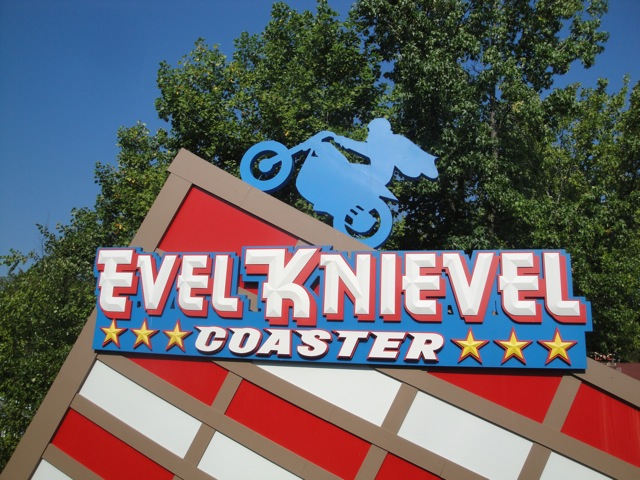
All right. Time to actually ride some rides.
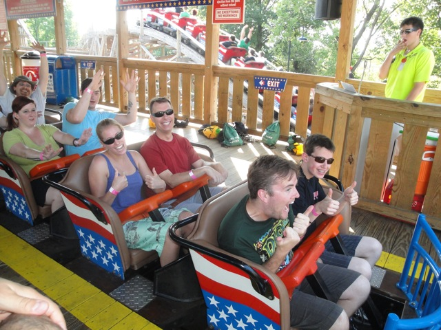
Good thing we have ERT on Evel Knievel.
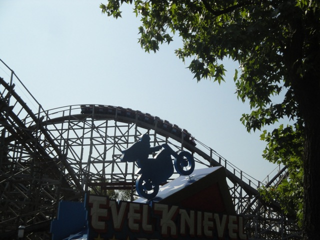
While Evel Knievel wasn't quite as good as Prowler, it was still a really good GCI.
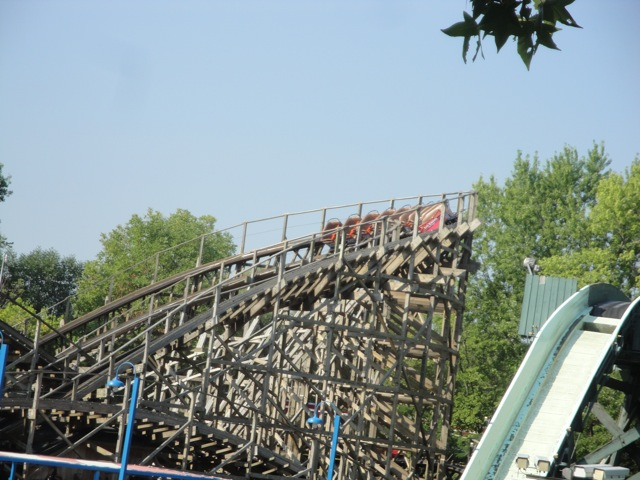
Standard GCI Twistiness.
 And now, it's time to ride Mr. Freeze.
And now, it's time to ride Mr. Freeze.
 More rides need restraints like this.
More rides need restraints like this.
"Just in case we die, I just want to say that I love you."
 Now that ERT is over, lets get this sh*tty ride out of the way.
Now that ERT is over, lets get this sh*tty ride out of the way.
 "Hey!! That sh*tty ride over there is my 200th credit!!!"
"Hey!! That sh*tty ride over there is my 200th credit!!!"
 While it's not quite as bad as Dragon and Wild Beast, this thing ranks as one of the worst coasters ridden by Incrediblecoasters.
While it's not quite as bad as Dragon and Wild Beast, this thing ranks as one of the worst coasters ridden by Incrediblecoasters.
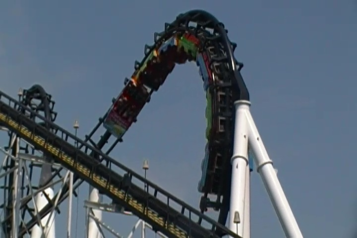
Yeah. You get a good SMACK to the head here.
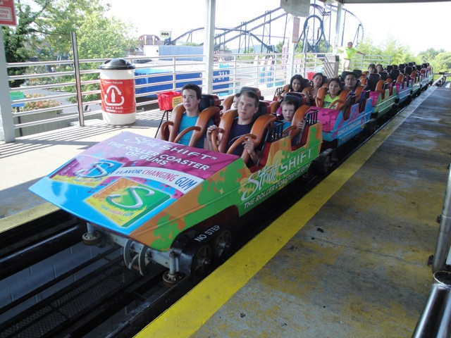
And on top of that, it has mind f*cking ugly wraps. While these Stride Wraps look good on some coasters, they look terrible here. BLACK AND RAINBOW DO NOT MIX SIX FLAGS!!!!!!! Well, at least they did this to an already sh*tty ride.
Hmm. Looks like Six Flags St. Louis got the old Twisted Twins trains from SFKK.
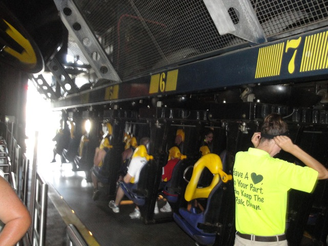
Up next, Batman the Ride.
There's something wrong with this Batman. I just can't figure out what.
Ahh!!! It's all backwards!!!
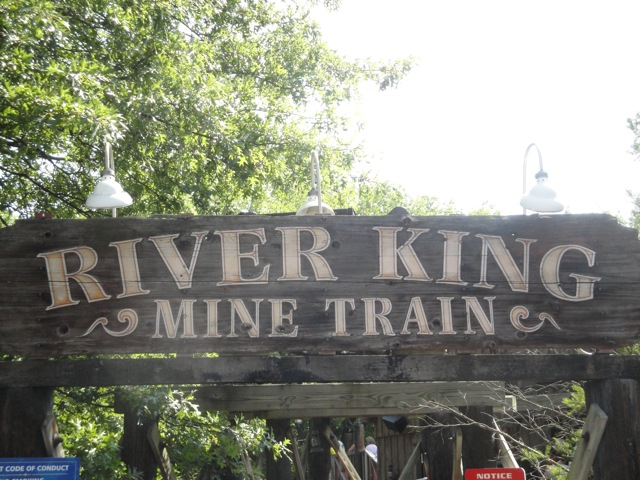
Cha Ching!!! Next!!!
 Superman Tower of Power. One of the few things that survived from Six Flags Astroworld. Good thing because it's a fun ride.
Superman Tower of Power. One of the few things that survived from Six Flags Astroworld. Good thing because it's a fun ride.
 Up next, Screamin Eagle.
Up next, Screamin Eagle.
 It's not a bad ride, but there's just nothing special about it.
It's not a bad ride, but there's just nothing special about it.
Up next, another Tony Hawk Clone.
 Hey, there's something different about this Tony Hawk.
Hey, there's something different about this Tony Hawk.
Yup. This is the original Tony Hawk layout and the SFDK one is actually the original one.
Meh, I'm not sure which one I like more.
 Once I get this done, I will have gotten all the credits here.
Once I get this done, I will have gotten all the credits here.
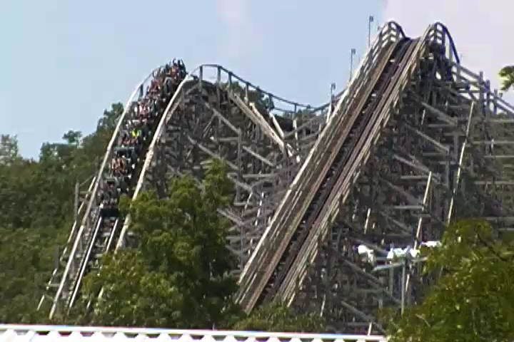
It's sort of what it would be like if Ghostrider, Villian, and Son of Beast had a threesome and spawned a son that they sent to SFSL.
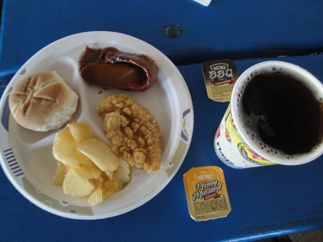
We got in all the credits before lunch. Yeah, this park is easy to navigate and conquer.
Ok, I failed to mention this before. It was BOILING today!!!!! And I mean BOILING!!!! I'm talking about 112 degree weather plus humidity. Ugh. Without a doubt, the hottest day in Incrediblecoasters History.
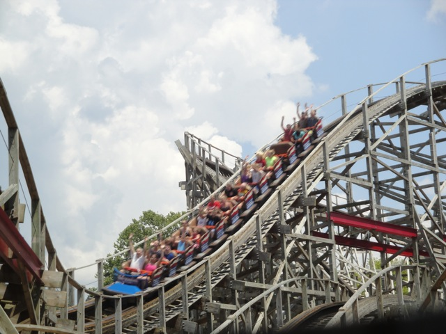
Anyone up for more rides on Evel Knievel?
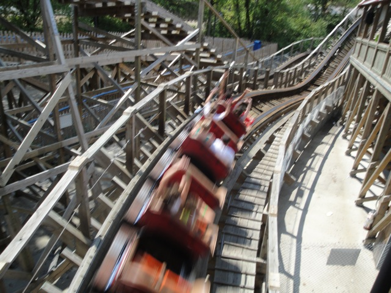
I'll trade Terminator for you.
 Normally I don't waste time at foreign parks riding Log Flumes. But today was an exception due to conquering the place and the extreme heat.
Normally I don't waste time at foreign parks riding Log Flumes. But today was an exception due to conquering the place and the extreme heat.
Just in case you get lost.
Ooh. What's this?
 Now this is something you don't see everyday. A dark ride in a Six Flags park.
Now this is something you don't see everyday. A dark ride in a Six Flags park.
And it's actually a good one. (I meant it was a good dark ride. Not I got a good score.)
Ooh. What's this?
 Xcalibur is the park's Evolution. A crazy flat ride that is awesome.
Xcalibur is the park's Evolution. A crazy flat ride that is awesome.
Dear other parks, please build one of these. From Incrediblecoasters.
Aww. Why can't Screamin Eagle still run with those trains.
 Oh well. It's still a decent ride. Onto the next park.
Oh well. It's still a decent ride. Onto the next park.
Holiday World
Home